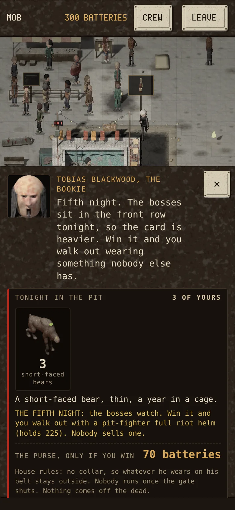
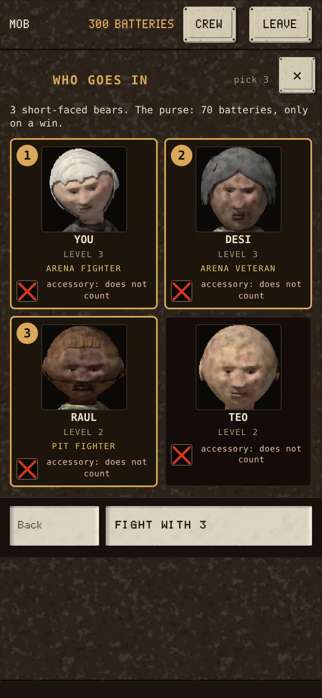
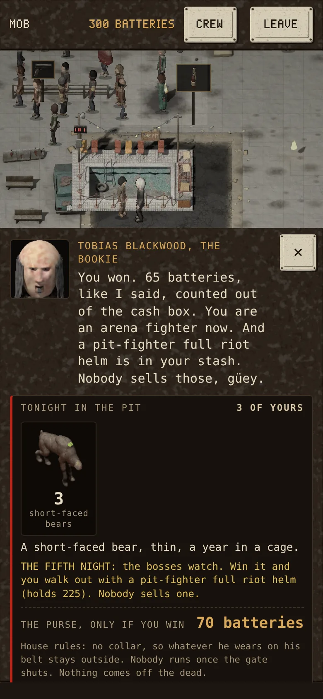

PAID ON A WIN, THE RANKS, THE FIFTH NIGHT
The purse is paid only when you win. Every man who wins in the pit climbs: Pit Fighter after one win, Arena Fighter after five (steadier: +5 resolve), Arena Veteran after twelve (+10 resolve, and when he's struck down his chance to die is cut in half). The rank shows under his face and helps him in every fight, not just the pit. Every fifth night is heavier, the bosses watch, and the winner walks out with gear no shop sells: the pit-fighter harness at five wins, the pit-fighter helm at ten. Lose the fifth night and the prize waits for your next win.



Battle Brothers' numbers: Pit Fighter has no stat, Arena Fighter +5 resolve, Arena Veteran +10 and +50% to survive being struck down; the harness and the helm are their gladiator gear (the helm holds 225). Every number is in TUNING's one table, section X.